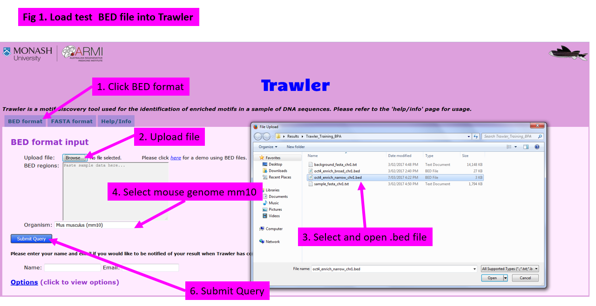
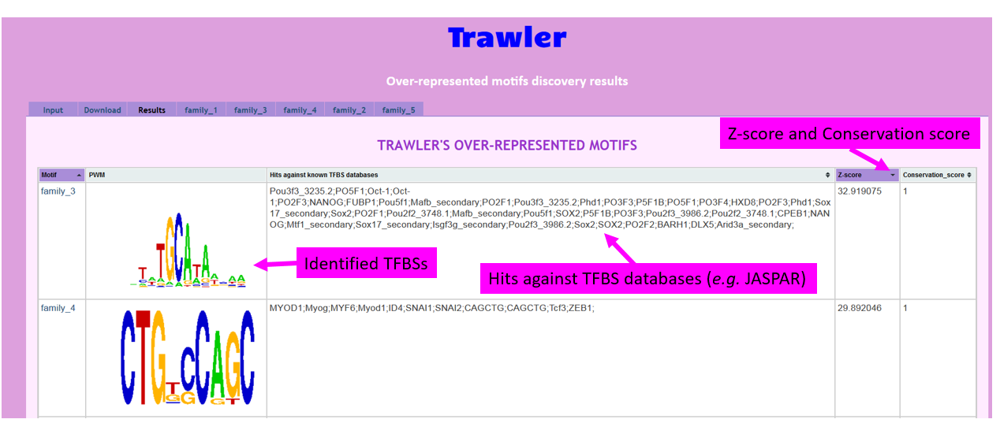
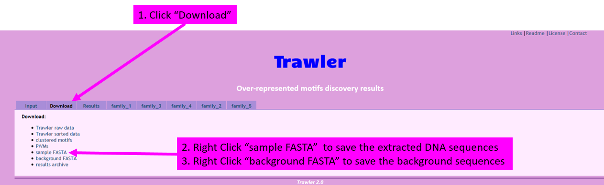
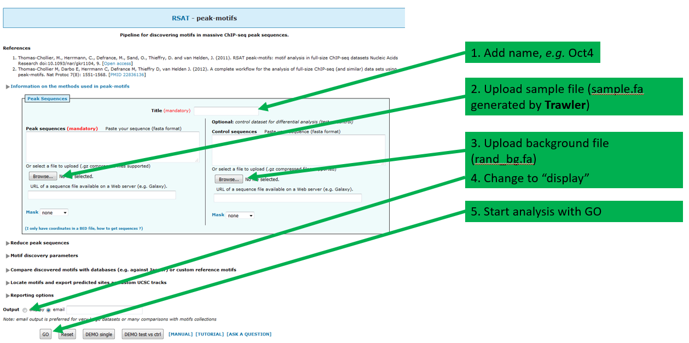
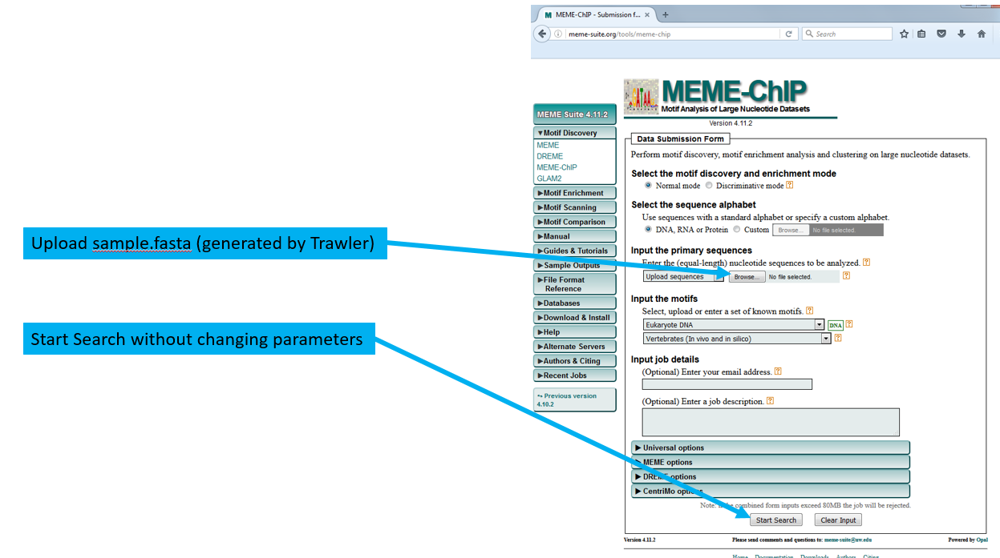

chip seq draft SL ST
Key Learning Outcomes
After completing this practical the trainee should be able to:
-
Perform ChIP-Seq analysis, e.g. the detection of immuno-enriched areas using the chosen R package: ChIP-seq processing pipeline (SPP)
-
Visualize the peak regions through a genome browser, e.g. IGV or Ensembl, and identify the real peak regions
-
Perform functional annotation using biomaRt R package and detect potential binding sites (motif) in the predicted binding regions using motif discovery tool, e.g. Trawler or MEME.
Resources You’ll be Using
Tools Used
SPP : \ http://compbio.med.harvard.edu/Supplements/ChIP-seq/
IGV : \ http://software.broadinstitute.org/software/igv/
Ensembl : \ http://www.ensembl.org
Trawler : \ https://trawler.erc.monash.edu.au/index.html
MEME : \ http://meme.ebi.edu.au/meme/cgi-bin/meme.cgi
TOMTOM : \ http://meme.ebi.edu/meme/cgi-bin/tomtom.cgi
DAVID : \ http://david.abcc.ncifcrf.gov
GOstat : \ http://gostat.wehi.edu.au
Sources of Data
http://www.ebi.ac.uk/arrayexpress/experiments/E-GEOD-11431
Introduction
The goal of this hands-on session is to perform some basic tasks in the analysis of ChIP-seq data. In fact, you already performed the first step, alignment of the reads to the genome, in the previous session. We start from the aligned reads and we will find immuno-enriched areas using SPP. We will visualize the identified regions in a genome browser and perform functional annotation and motif analysis on the predicted binding regions.
Prepare the Environment
The material for this practical can be found in the ChIP-seq directory
on your desktop. Please make sure that this directory also contains the
SAM/BAM files you produced during the alignment practical.
If you didn’t have time to align the control file called gfp.fastq
during the alignment practical, please do it now. Follow the same steps,
from the bowtie alignment step, as for the Oct4.fastq file.
In ChIP-seq analysis (unlike in other applications such as RNA-seq) it
can be useful to exclude all reads that map to more than one location in
the genome. When using Bowtie, this can be done using the -m 1 option,
which tells it to report only unique matches (See bowtie –help for
more details).
Open the Terminal and go to the ChIP-seq directory:
cd /home/trainee/ChIP-seq ls R
Finding enriched areas using SPP
Terminology used in the tutorial: fragment: overlapping fragments
obtaining in the IP (immuno precipitation) experiments. tag: sequenced
part of the fragment which could be from one end (in case of single end
sequencing ) or both ends in the paired end data. alignment: a process
to determine the position of the tags, which typically should be around
the binding site. peaks: spatial distribution of the tags densities
around the binding sites on the genome. You would see two separate peaks
of tags on the positive and negative strand around the binding site. The
distance between the two peaks should reflect the size of the protected
region.
SPP is a Chip-seq processing pipeline implemented using R.
The main functions of SPP include locating quality tag alignment by screening overall DNA-binding signals, removing or restricting certain positions with extremely high number of tags, estimating significant enrichment regions through genome-wide profiling, providing appropriate outputs for visualization, and determining statistically significant binding positions with saturation criteria assessment. Moreover, the processing of ChIP-seq data can require considerable amount of CPU time, it is often necessary to make use of parallel processing. SPP supports parallel processing if the cluster option is configured. Since our example data is relatively small, we will use single CPU and omit the cluster parameters for simplicity. The following steps will work you through the SPP pipeline.
In your R terminal, load spp and biomaRt packages and make sure to set your working directory correctly:
library(spp);
library(biomaRt);
setwd('/home/trainee/ChIP-seq');
1. Loading tag data, selecting choosing alignment quality, removing anomalies\ The first stage in SPP are 1) load input data; 2) choose alignment quality and 3) remove anomalies. SPP can read output from the following aligners and file formats: ELAND, MAQ, bowtie, Arachne, tagAlign format and BAM format (Note: because BAM standard doesn’t specify a flag for a uniquely-mapped read, the aligner has to generate a BAM file that would contain only unique reads.)
STEP1 Loading data and quality filter the informative tags
First load Oct4 and gfp bam files. Here GFP are the control or input samples, these are usually mock IP DNA where you do not expect to see any binding peaks.
oct4.data<-read.bam.tags("Oct4.sorted.bam");
gfp.data<-read.bam.tags("gfp.sorted.bam");
The statistical significance of tags clustering observed for a putative protein binding site depends on the expected background. Therefore, use of a input or control DNA is highly recommended in the experiment design. This provides an experimental assessment of the background tag distribution.
The next step uses cross-correlation profile to calculate binding peak separation distance, and assess whether inclusion of tags with non-perfect alignment quality improves the cross-correlation peak. This is done by shifting the strands relative to each other by increasing distance within a given range. cross-correlation of the positive and negative strand tag densities is plotted. The cross-correlation plot should show the predominant size of the protected region.
binding.characteristics <- get.binding.characteristics(oct4.data,srange=c(50,500),bin=5);
The binding.characteristics provides the estimate of the binding peak separation distance, cross-correlation profile itself and tag quality bin acceptance information. The srange parameter defines the possible range for the size of the protected region. It is supposed to be higher than tag length. However, the upper boundary (500) cannot be too high, which will increase the running time. The bin parameter tags within the specified number of base pairs to speed up calculation. The increase of bin size will decrease the accuracy of the determined parameters.
Then, print out binding peak separation distance and we can plot cross-correlation profile:
print(paste("binding peak separation distance=",binding.characteristics$peak$x));
pdf(file="oct4.crosscorrelation.pdf",width=5,height=5);
par(mar = c(3.5,3.5,1.0,0.5), mgp = c(2,0.65,0), cex = 0.8);
plot(binding.characteristics$cross.correlation,type='l',xlab="strand shift",ylab="cross-correlation");
abline(v=binding.characteristics$peak$x,lty=2,col=2);
dev.off();
A set of tags informative about the binding positions should increase cross correlation magnitude whereas a randonmly mapped set of tags should decrease it. The following calls will select tags with acceptable alignment quality based on the binding characteristics:
chip.data <- select.informative.tags(oct4.data,binding.characteristics); gfpcontrol.data <- select.informative.tags(gfp.data,binding.characteristics);
The last step below will scan along the chromosomes calculating local density of region (can be specified using window.size parameter, default is 200bp), removing or restricting singular positions with extremely high tag count relative to the neighborhood:
chip.data <- remove.local.tag.anomalies(chip.data); gfpcontrol.data <- remove.local.tag.anomalies(gfpcontrol.data);
STEP2 Calculating genome-wide tag density and tag enrichment/depletion profiles
The following commands will calculate smoothed tag density and output it into a WIG file that can be read with genome browsers, such as IGV (Note: the tags are shifted by half of the peak separation distance):
tag.shift <- round(binding.characteristics$peak$x/2) smoothed.density <- get.smoothed.tag.density (chip.data,control.tags=gfpcontrol.data,bandwidth=200,step=100,tag.shift=tag.shift); writewig(smoothed.density,"oct4.density.wig","Smoothed, background-subtracted tag density"); rm(smoothed.density);
To provide a rough estimate of the enrichment profile (i.e. ChIP signal over input), we can use the get.smoothed.enrichment.mle() method:
smoothed.enrichment.estimate <- get.smoothed.enrichment.mle (chip.data,gfpcontrol.data,bandwidth=200,step=100,tag.shift=tag.shift); writewig(smoothed.enrichment.estimate,"oct4.enrichment.wig","Smoothed maximum likelihood log2 enrichment estimate");
Next, we will scan ChIP and signal tag density to estimate lower bounds of tag enrichment (and upper bound of tag depletion if it is significant) along the genome. The resulting profile gives conservative statistical estimates of log2 fold-enrichment ratios along the genome. The example below uses a window of 500bp (and background windows of 1, 5, 25 and 50 times that size) and a confidence interval corresponding to 1%.
enrichment.estimates <- get.conservative.fold.enrichment.profile(chip.data,gfpcontrol.data,fws=500,step=100,alpha=0.01); writewig(enrichment.estimates,"oct4.Enrichment.estimates.wig","Conservative fold-enrichment/depletion estimates shown on log2 scale"); rm(enrichment.estimates);
Also, broad regions of enrichment for a specified scale can be quickly identified and output in broadPeak format using the following commands:
broad.clusters <- get.broad.enrichment.clusters(chip.data,gfpcontrol.data,window.size=1e3,z.thr=3,tag.shift=round(binding.characteristics$peak$x/2)); write.broadpeak.info(broad.clusters,"oct4.broadPeak");
write out in bed format
write.table(cbind(rep("1", length(broad.clusters$chr1$s)), broad.clusters$chr1$s, broad.clusters$chr1$e), file = paste0("oct4","_enrich_broad_chr1.bed"),quote = FALSE, row.names = FALSE, col.names = FALSE, sep = "\t");
The tasks below will use window tag density (WTD) method to call binding positions, using FDR of 1% and a window size estimated by the binding.characteristics.
We set the binding detection parameters: FDR (1%) (Note: we can use an E-value to the method calls below instead of the fdr), the binding.characteristics contains the optimized half-size for binding detection window:
fdr <- 1e-2; detection.window.halfsize <- binding.characteristics$whs;
Identify binding positions using WTD method and write narrow peaks in BED format:
bp <- find.binding.positions(signal.data=chip.data,control.data=gfpcontrol.data,fdr=fdr,whs=detection.window.halfsize);
print(paste("detected",sum(unlist(lapply(bp$npl,function(d) length(d$x)))),"peaks"));
bp.short <- add.broad.peak.regions(chip.data,gfpcontrol.data,bp,window.size=500,z.thr=3); //set the window size to 500.
write.table(na.omit(data.frame(cbind(rep("1", length(bp.short$npl$chr1$rs)), bp.short$npl$chr1$rs, bp.short$npl$chr1$re))), file = paste0("oct4","_enrich_narrow_chr1.bed"),quote = FALSE, row.names = FALSE, col.names = FALSE, sep = "\t");
STEP3 Comparing Binding Sites to Annotations Using the biomaRt package
In order to biologically interpret the results of ChIP-seq experiments, it is usually recommended to look at the genes and other annotated elements that are located in proximity to the identified enriched regions. This can be easily done using the R biomaRt package, which serves as an interface to perform comprehensive data analysis from gene annotation to data mining through wealth number of biological databases integrated by the BioMart software suite (http://www.biomart.org). It provides fast access to large amount of data without touching the underlying database or using complex database queries. These major databases including Ensembl, COSMIC, HGNC, Gramene, Wormbase and dbSNP mapped to Emsembl.
you should make sure that ensembl has the same version of reference as you used in bowtie aligner.
We will download the ENSEMBLE mouse genome annotations and generate a list of ENSEMBLE gene information on chromosome 1 including start position, end position, strand and description
ensembl = useMart(host="asia.ensembl.org", "ENSEMBL_MART_ENSEMBL", dataset = "mmusculus_gene_ensembl");
genes.chr1 = getBM(attributes = c("chromosome_name", "start_position", "end_position", "strand", "description"), filters = "chromosome_name", values= "1", mart = ensembl);
Next, we’re going to take our binding sites from the bp list and use it to determine the set of genes that contain significantly enriched Pol II within 2kb of their TSS.
In order to compare PolII sites to TSS sites, we need to write an overlap function where bs represents a binding site position, ts is the annotated TSS and l is the allowed distance of the binding site from the TSS.
overlap = function(bs, ts, l)
{
if ((bs > ts - l) && (bs < ts + l)) {
TRUE;
} else {
FALSE;
}
}
Now we’ll write a function that takes a vector of binding site values, start positions, end positions and strands of the genes on chromosome X as well as our distance cutoff. l and outputs a logical vector of the genes that contain a Pol II site within l bp (i.e., TRUE value) or do not contain a Pol II site (i.e., FALSE value).
fivePrimeGenes = function(bs, ts, te, s, l) {
fivePrimeVec = logical();
for (i in 1:length(ts)) {
fivePrime = FALSE;
for (j in 1:length(bs)) {
if (s[i] == 1) {
fivePrime = fivePrime || overlap(bs[j], ts[i], l);
} else {
fivePrime = fivePrime || overlap(bs[j], te[i], l);
}
}
fivePrimeVec = c(fivePrimeVec, fivePrime);
}
fivePrimeVec;
}
Using the fivePrimeGenes function, generate a vector of the TSSs and genes that contain Pol II within .2kb of their TSS (i.e., l = 2000).
fivePrimeGenesLogical = fivePrimeGenes(bp$npl$chr1$x, genes.chr1$start_position, genes.chr1$end_position, genes.chr1$strand, 2000);
Find the gene located on the plus strand
fivePrimeStartsPlus = genes.chr1$start_position[fivePrimeGenesLogical & genes.chr1$strand == 1];
Find the gene located on the minus strand
fivePrimeStartsMinus = genes.chr1$end_position[fivePrimeGenesLogical & genes.chr1$strand == -1];
Combine the start positions together
fivePrimeStarts = sort(c(fivePrimeStartsPlus, fivePrimeStartsMinus))
Get all the gene names
fivePrimeGenes = genes.chr1$description[fivePrimeGenesLogical]
Viewing results with the Genome browser
It is often instructive to look at your data in a genome browser, which will allow you to get a ‘feel’ for the data, as well as detecting abnormalities and problems. Also, exploring the data in such a way may give you ideas for further analyses. Well known web-based genome browsers, like Ensembl or the UCSC browser do not only allow for more polished and flexible visualization, but also provide access to a wealth of annotations and external data sources. This makes it straightforward to relate your data with information about repeat regions, known genes, epigenetic features or areas of cross-species conservation, to name just a few. As such, they are useful tools for exploratory analysis, even though could be relatively slow. In this section, we will guide you though using IGV, a stand-alone browser, which has the advantage of being installed locally, easy to use and fast access to visualize your in-house data. We alo provide the workflow of how to use Ensembl for visualization. You can practise after the workshop.
IGV Visualization
Double click the IGV 2.3 icon on your Desktop. Ignore any warnings and when it opens you have to load the genome of interest. On the top left of your screen choose from the drop down menu Mouse (mm10). If it doesn’t appear in list, click More .., type mm10 in the Filter section, choose the mouse genome and press OK.
We have generated bigWig files in advance for you. Instead of choosing the ’Load from File’ option, we are going to use ’Load from URL’ to upload to IGV. The first file is at the following URL: http://www.ebi.ac.uk/~remco/ChIP-Seq_course/Oct4.bw
To visualise the data:
-
Select chr1 in the chromosome drop-down box next to the ’Mouse mm10’ box.
-
Click File then choose Load from URL…
-
Paste the location above in the field File URL.
-
Click OK and close the window to return to the genome browser.
-
You should see Oct4.bw has been loaded in the track region below the genome region.
-
Move the mouse to track region over Oct4.bw.
-
Right click the mouse, Change the track colour on your own perference.
-
Right click again, in the Windowing Function, choose Maxmum and set to Autoscale.
Repeat the process for the gfp control sample, located at:
http://www.ebi.ac.uk/~remco/ChIP-Seq_course/gfp.bw.
Go to a region on chromosome 1 (e.g. 1:34823162-35323161), and zoom in
and out to view the signal and peak regions. Be aware that the y-axis of
each track is auto-scaled independently of each other, so bigger-looking
peaks may not actually be bigger! Always look at the values on the left
hand side axis.
What can you say about the profile of Oct4 peaks in this region?
There are no significant Oct4 peaks over the selected region.
Compare it with H3K4me3 histone modification wig file we have generated at http://www.ebi.ac.uk/~remco/ChIP-Seq_course/H3K4me3.bw.
H3K4me3 has a region that contains relatively high peaks than Oct4.
Jump to 1:36066594-36079728 for a sample peak. Do you think H3K4me3
peaks regions contain one or more modification sites? What about Oct4?
Yes. There are roughly three peaks, which indicate the possibility of having more than one modification sites in this region.
For Oct4, no peak can be observed.
Advanced Session
Ensembl Visualization
Launch a web browser and go to the Ensembl website at http://www.ensembl.org/index.html. Choose the genome of interest (in this case, mouse) on the left side of the page, browse to any location in the genome or click one of the demo links provided on the web page. Click on the Add your data link on the left, then choose Attach remote file.
Wig files are large so are inconvenient for uploading directly to the Ensemble Genome browser. Instead, we will convert it to an indexed binary format and put this into a web accessible place such as on a HTTP, HTTPS, or FTP server. This makes all the browsing process much faster. Detailed instructions for generating a bigWig from a wig type file can be found at:
http://genome.ucsc.edu/goldenPath/help/bigWig.html.
We have generated bigWig files in advance for you to upload to the Ensembl browser. They are at the following URL: http://www.ebi.ac.uk/~remco/ChIP-Seq_course/Oct4.bw
To visualise the data:
-
Paste the location above in the field File URL.
-
Choose data format bigWig.
-
Choose some informative name and in the next window choose the colour of your preference.
-
Click Save and close the window to return to the genome browser.
Repeat the process for the gfp control sample, located at:
http://www.ebi.ac.uk/~remco/ChIP-Seq_course/gfp.bw.
If can not see your tracks: Click on ’Configure this page’ in left panel. In ’Configure region Overview’ tab click on ’Ypur data’ in left panel. Check the boxes in ’Enable/Disable all tracks’ for you *.bw files by selecting ’wiggle plot in the pop up menu.
After uploading, choose Configure this page, and under Your data tick both boxes. Closing the window will save these changes.
Go to a region on chromosome 1 (e.g. 1:34823162-35323161), and zoom in
and out to view the signal and peak regions. Be aware that the y-axis of
each track is auto-scaled independently of each other, so bigger-looking
peaks may not actually be bigger! Always look at the values on the left
hand side axis.
MACS generates its peak files in a file format called bed file. This is a simple text format containing genomic locations, specified by chromosome, begin and end positions, and some more optional information.
See http://genome.ucsc.edu/FAQ/FAQformat.html#format1 for details.
Bed files can also be uploaded to the Ensembl browser.
Motif analysis
It is often interesting to find out whether we can identify transcription factor binding sites (TFBSs) from the input DNA sequences. TFBSs which share a similar sequence pattern (motif) are presumed to have biological functions. Here we introduce three motif discovery tools named Trawler, RSAT peak-motifs, and MEME-ChIP, which use different searching algorithms. This might lead to varying results. Hence, it is generally a good idea to use several tools to identify TFBSs. The more tools confirm the same result, the better, which is also called an orthogonal approach. Eventually, you probably want to validate your in silico findings in vivo or in vitro.
Motif discovery with Trawler
Trawler is a fast, yet accurate motif discovery tool that accepts both, BED and FASTA files as input file formats. BED files are generated when you process and analyse your NGS data. Thus, it is handy to use them directly in Trawler. Other tools do not accept BED files as input. With Trawler, BED files can be converted into FASTA files that can then be used for other motif discovery tools (e.g. RSAT peak-motifs and MEME ChIP).
Running Trawler
-
Go to the website https://trawler.erc.monash.edu.au
-
Run Trawler with BED file as input, and wait for the results  
-
Download both sample and background files in FASTA format. Right click and choose: ’Save the link as…’ 
Which motif was found to be the most similar to your motif?
Sox2
Optional: Motif discovery with RSAT peak-motif
The motif discovery tool RSAT peak-motifs uses FASTA files as input. An optional background can be uploaded in FASTA format. RSAT peak-motifs automatically outputs motifs of 6 and 7 nucleotides length (two separate files). While still accurate, the running time is longer compared to Trawler (up to 20 minutes depending on the size of the files).
Running RSAT peak-motifs
-
Go to the website http://floresta.eead.csic.es/rsat/peak-motifs~f~orm.cgi
-
Upload input and background FASTA files just downloaded from Trawler 
-
Wait until the discovery finishes.
Optional: Motif discovery with MEME-ChIP
MEME-ChIP is a popular motif discovery tool and part of MEME Suite. MEME-ChIP accepts input files in FASTA format. It is not necessary to upload your own background because MEME-ChIP uses its own. Although MEME-ChIP is one of the most popular motif discovery tools, the identified motifs are not very accurate and the motif search might take up to one hour. MEME-ChIP outputs the three motifs with the lowest E-Value.
Running MEME-ChIP
-
Go to the website http://meme-suite.org/tools/meme-chip
-
Upload input and background FASTA files just downloaded from Trawler 
-
Wait until the discovery finishes.
Reference
Chen, X et al.: Integration of external signaling pathways with the core transcriptional network in embryonic stem cells. Cell 133:6, 1106-17 (2008).